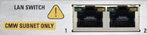

LAN SWITCH R&S CMW-B661A (Optional)

The LAN switch R&S CMW-B661A provides two external ports, accessible via eight-pin RJ45 connectors. The ports provide access to the internal IP network of the instrument (CMW subnet), for example for logging of signaling messages. The switch supports 100 Mbit/s and 1 Gbit/s.